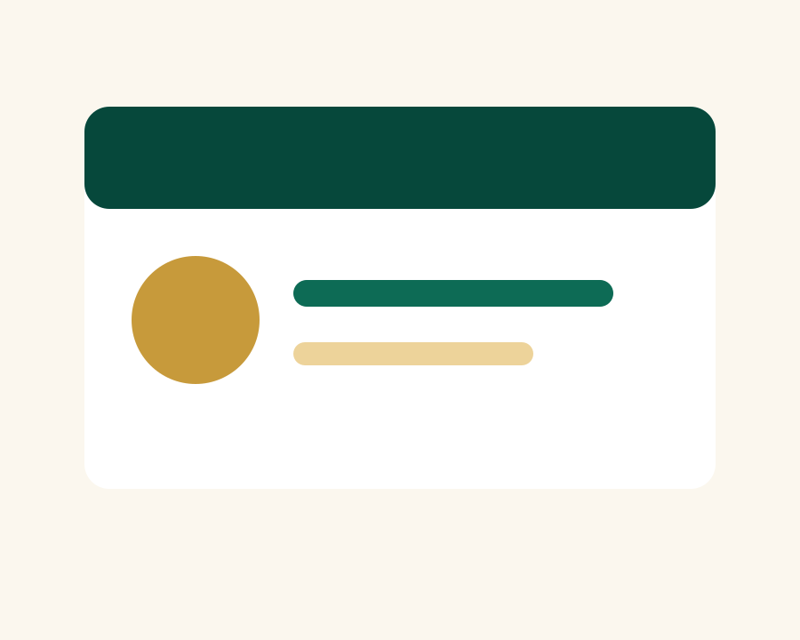

Visi
Menjadi lembaga bimbingan ibadah yang amanah, ramah jamaah, dan menghadirkan persiapan ibadah yang menenteramkan.
Lembaga bimbingan ibadah yang berfokus pada persiapan, manasik, dan pendampingan jamaah dengan komunikasi yang tenang dan jelas.
Profil lengkap lembaga, sejarah berdiri, alamat operasional, dan legalitas resmi dapat ditambahkan setelah data asli tersedia.
KBIHU Saffienatun Najah hadir sebagai ruang bimbingan bagi calon jamaah yang ingin memahami ibadah Haji dan Umroh secara lebih siap, tertata, dan mudah dipahami, terutama keluarga serta jamaah lanjut usia.

Menjadi lembaga bimbingan ibadah yang amanah, ramah jamaah, dan menghadirkan persiapan ibadah yang menenteramkan.
Memberikan manasik yang sistematis, pendampingan komunikatif, informasi transparan, dan pelayanan yang memperhatikan kebutuhan jamaah.
Amanah, ketenangan, ketelitian, keramahan, dan penghormatan kepada setiap jamaah.
Data pembimbing akan diperbarui.
Data tim layanan akan diperbarui.
Kami tidak mencantumkan klaim legalitas, penghargaan, alamat, atau angka jamaah sebelum data asli diberikan.